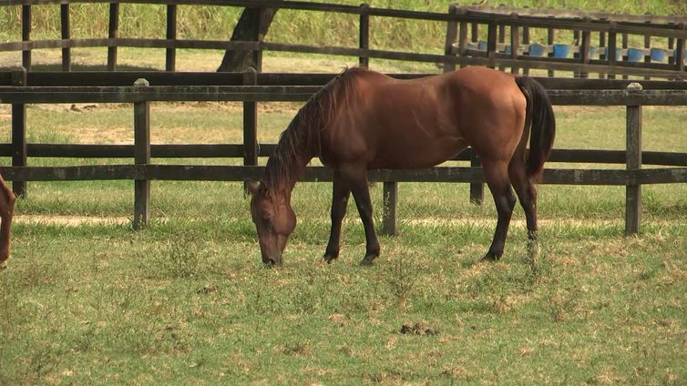

Raças de Equinos

tipos e variedades de raças que você tem interesse
Cavalo, burro e jumento. Você sabe qual a diferença entre ... O cavalo (macho) e a égua (fêmea) são equinos.
tipos e variedades de raças que você tem interesse
Cavalo, burro e jumento. Você sabe qual a diferença entre ... O cavalo (macho) e a égua (fêmea) são equinos.
Árabe. Parapan 2023: confira as medalhas do Brasil no dia 22/11. ... Appaloosa. Raça usada para sela e esportes, possui entre 1,47 e 1,57 metro e foi desenvolvida por índios do rio Palouse no noroeste dos Estados Unidos. ... Quarto de Milha. ... Andaluz. ... Percheron. ... Puro Sangue Inglês. ... Lusitano.
Ja no brasil são os: Andaluz, árabe, campolina, crioulo, manga-larga, pampa e quarto de milha são os cavalos preferidos dos brasileiros.